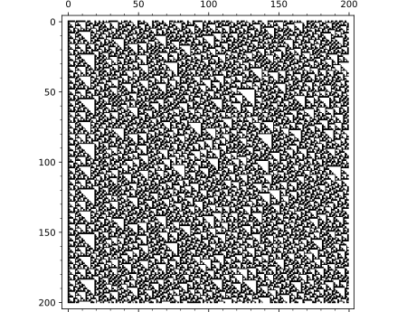

Elementary Cellular Automata¶
AUTHORS:
- Travis Scrimshaw (2018-07-07): Initial version
-
class
sage.dynamics.cellular_automata.elementary.ElementaryCellularAutomata(rule, width=None, initial_state=None, boundary=(0, 0))¶ Bases:
sage.structure.sage_object.SageObjectElementary cellular automata.
An elementary cellular automaton is a 1-dimensional cellular deterministic automaton with two possible values: \(X := \{0,1\}\). A state is therefore a sequence \(s \in X^n\), and the evolution of a state \(s \to s'\) is given for \(s'_i\) by looking at the values at positions \(s_{i-1}, s_i, s_{i+1}\) and is determined by the rule \(0 \leq r \leq 255\) as follows. Consider the binary representation \(r = b_7 b_6 b_5 b_4 b_3 b_2 b_1 b_0\). Then, we define \(s'_i = b_j\), where \(j = s_{i-1} s_i s_{i+1}\) is the corresponding binary representation. In other words, the value \(s'_i\) is given according to the following table:
\[\begin{split}\begin{array}{cccccccc} 111 & 110 & 101 & 100 & 011 & 010 & 001 & 000 \\ b_7 & b_6 & b_5 & b_4 & b_3 & b_2 & b_1 & b_0 \end{array}\end{split}\]We consider the boundary values of \(s_0 = s_{n+1} = 0\).
INPUT:
rule– an integer between 0 and 255width– (optional) the width of the ECAinitial_state– (optional) the initial state given as a list of0and1boundary– (default:(0, 0)) a tuple of the left and right boundary conditions respectively orNonefor periodic boundary conditions
Either
widthorinitial_statemust be given. Ifwidthis less than the length ofinitial_state, theninitial_statehas0prepended so the resulting list has lengthwidth. If onlywidthis given, then the initial state is constructed randomly.The boundary conditions can either be
0,1, or a function that takes an integerncorresponding to the state and outputs either0or1.EXAMPLES:
We construct an example with rule \(r = 90\) using \(n = 20\). The initial state consists of a single \(1\) in the rightmost entry:
sage: ECA = cellular_automata.Elementary(90, width=20, initial_state=[1]) sage: ECA.evolve(20) sage: ascii_art(ECA) X X X X X X X X X X X X X X X X X X X X X X X X X X X X X X X X X X X X X X X X X X X X X X X X X X X X X X
We now construct it with different boundary conditions. The first is with the left boundary being \(1\) (instead of \(0\)):
sage: ECA = cellular_automata.Elementary(90, width=20, initial_state=[1], boundary=(1,0)) sage: ECA.evolve(20) sage: ascii_art(ECA) X X X XX X X XX X XXX X X X XX X X XXX X X X X X XX XX X X XX XXX X X X XX X XX X X X XX XX X X X X XXX XXXXX X X X X X XX X X X X XXXX X X XX X X X X X X XX X XX XX XX XXXX XX XX XXX X XXXXX XX X XX XXX X XX XXX XXX XX X XXX XX XX X XX XXX X XX XXX
Now we consider the right boundary as being \(1\) on every third value:
sage: def rbdry(n): return 1 if n % 3 == 0 else 0 sage: ECA = cellular_automata.Elementary(90, width=20, initial_state=[1], boundary=(0,rbdry)) sage: ECA.evolve(20) sage: ascii_art(ECA) X X X X X X X XX X XXX X XXX X X XX X XX XXX X XXXXX X XXX XX X X XX XXXX X XX XX X X XXXXXX X X XXX XXX X X X XX XX X X XX XXXXXX X X XXXXX XXX X X XXX XX XX X X X XX XXXXXXX X XX XX X XXX X
Lastly we consider it with periodic boundary condition:
sage: ECA = cellular_automata.Elementary(90, width=20, initial_state=[1], boundary=None) sage: ECA.evolve(20) sage: ascii_art(ECA) X X X X X X X X X X X X X X X X X X X X X X X X X X X X X X X X X X X X X X X X X X X X X X X X X X X X X X X X X X X X X X X X X X X X X X X X X X X X X
We show the local evolution rules for rule \(110\):
sage: for t in cartesian_product([[0,1],[0,1],[0,1]]): ....: ECA = cellular_automata.Elementary(110, list(t)) ....: ECA.print_states(2) ....: print('#') # X XX # X XX # XX XXX # X X # X X XXX # XX XX # XXX X X #
We construct an elementary cellular automaton with a random initial state with \(n = 15\) and see the state after \(50\) evolutions:
sage: ECA = cellular_automata.Elementary(26, width=25) sage: ECA.print_state(50) # random X X X X X X
We construct and plot a larger example with rule \(60\):
sage: ECA = cellular_automata.Elementary(60, width=200) sage: ECA.evolve(200) sage: ECA.plot() Graphics object consisting of 1 graphics primitive
With periodic boundary condition for rule \(90\):
sage: ECA = cellular_automata.Elementary(90, initial_state=[1]+[0]*254+[1], boundary=None) sage: ECA.evolve(256) sage: ECA.plot() Graphics object consisting of 1 graphics primitive
REFERENCES:
Wikipedia article Elementary_cellular_automaton
-
evolve(number=None)¶ Evolve
self.INPUT:
number– (optional) the number of times to perform the evolution
EXAMPLES:
sage: ECA = cellular_automata.Elementary(110, [1,0,0,1,1,0,0,1,0,1]) sage: ascii_art(ECA) X XX X X sage: ECA.evolve() sage: ascii_art(ECA) X XX X X X XXX XXXX sage: ECA.evolve(10) sage: ascii_art(ECA) X XX X X X XXX XXXX XXX XXX X X XXX X XX XXX XXXXXX X XXX X XXX X XX X XXX XXX XXX X XX X X XXXXXXXX XXX X X X XX
-
plot(number=None)¶ Return a plot of
self.INPUT:
number– the number of states to plot
EXAMPLES:
sage: ECA = cellular_automata.Elementary(110, width=256) sage: ECA.evolve(256) sage: ECA.plot() Graphics object consisting of 1 graphics primitive
-
print_state(number=None)¶ Print the state
number.INPUT:
number– (default: the current state) the state to print
EXAMPLES:
sage: ECA = cellular_automata.Elementary(110, width=10, ....: initial_state=[1,0,0,1,1,0,1]) sage: ECA.print_state(15) X X XXXXX sage: ECA.print_state(10) X X XX sage: ECA.print_state(20) X XXX sage: for i in range(11): ....: ECA.print_state(i) X XX X XX XXXXX XXXXX X XX X XX XX XX XXX XX XXXXX X XXXX XXX X X XX X X XX XXXXX XXXXXX X X X XX
-
print_states(number=None)¶ Print the first
numstates ofself.Note
If the number of states computed for
selfis less thannum, then this evolves the system using the default time evolution.INPUT:
number– the number of states to print
EXAMPLES:
sage: ECA = cellular_automata.Elementary(110, width=10, ....: initial_state=[1,0,0,1,1,0,1]) sage: ECA.print_states(10) X XX X XX XXXXX XXXXX X XX X XX XX XX XXX XX XXXXX X XXXX XXX X X XX X X XX XXXXX XXXXXX X